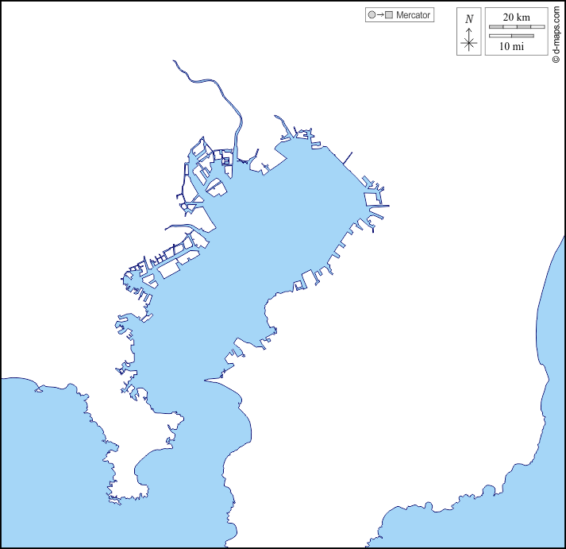

🎣
BayCast
Tokyo Bay Anglers Condition Navigator
🛥️ フィールド
船・ボート
おかっぱり (堤防・サーフ)
📍 エリア選択
湾奥 (東京・千葉北西)
湾央 (川崎・横浜・木更津)
湾口 (横須賀・三浦・富津)
🎯 ターゲット
シーバス
マゴチ・ヒラメ
青物 (イナダ・サワラ)
マダイ
アジ
タチウオ
アオリイカ
シロギス
🎣 スタイル
ルアー釣り
餌釣り
☀️ 晴れ
🍃 北東 3m/s
🌊 中潮
--
点
--
🗺️ 選択エリアハイライト

🌊 水深別コンディション予測 (全層)
📈 直近の水温・酸素・濁度トレンド (全層完全解析)
🛠️ 実践タックル & ストラテジー
🤖 AI地合い予測
⏱️ 3時間ごとの詳細海況予報 (天気・風向風速・干満・潮位)
満潮
干潮